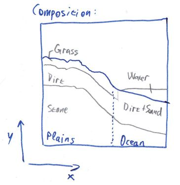
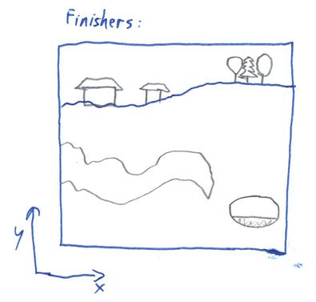
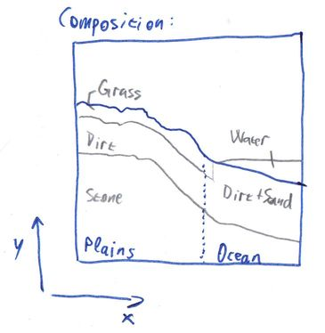
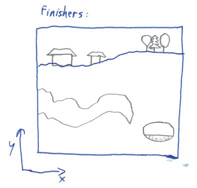
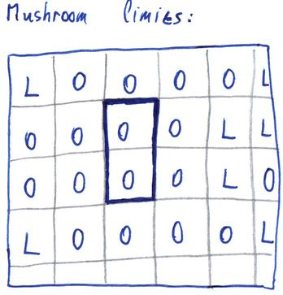
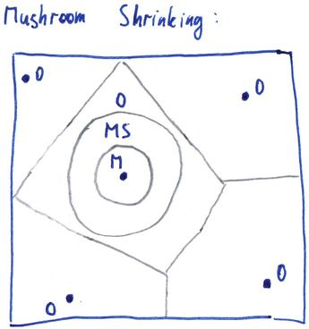

This article explains the principles behind the terrain generator in MCServer. It is not strictly specific to MCServer, though, it can be viewed as a generic guide to various terrain-generating algorithms, with specific implementation notes regarding MCServer.
Contents:
The nature has many complicated geological, physical and biological processes working on all scales from microscopic to planet-wide scale, that have shaped the terrain into what we see today. The tectonic plates collide, push mountain ranges up and ocean trenches down. Erosion dulls the sharp shapes. Plantlife takes over to further change the overall look of the world.
Generally speaking, the processes take what's there and change it. Unlike computer generating, which usually creates a finished terrain from scratch, or maybe with only a few iterations. It would be unfeasible for software to emulate all the natural processes in enough detail to provide world generation for a game, mainly because in the nature everything interacts with everything. If a mountain range rises, it changes the way that the precipitation is carried by the wind to the lands beyond the mountains, thus changing the erosion rate there and the vegetation type.
For a MineCraft-like game terrain generator we need the generator to have several properties:
As already mentioned, the nature works basically by generating raw terrain composition, then "applying" erosion, vegetation and finally this leads to biomes being formed. Let's now try a somewhat inverse approach: First generate biomes, then fit them with appropriate terrain, and finally cover in vegetation and all the other stuff.
Splitting the parts like this suddenly makes it possible to create a generator with the required properties. We can generate a reasonable biome map chunk-wise, independently of all the other data. Once we have the biomes, we can compose the terrain for the chunk by using the biome data for the chunk, and possibly even for neighboring chunks. Note that we're not breaking the first property, the biomes can be generated separately so a neighboring chunk's biome map can be generated without the need for the entire neighboring chunk to be present. Similarly, once we have the terrain composition for a chunk, we can generate all the vegetation and structures in it, and those can again use the terrain composition in neighboring chunks.
This leads us directly to the main pipeline that is used for generating terrain in MCServer. For technical reasons, the terrain composition step is further subdivided into Height generation and Composition generation, and the structures are really called Finishers. For each chunk the generator generates, in this sequence:

 



The beautiful thing about this is that the individual components can be changed independently. You can have 5 biome generators and 3 height generators and you can let the users mix'n'match.
For a great tutorial on coherent noise, see the LibNoise documentation.
Coherent noise is a type of noise that has three important properties that we can use to our advantage:
We'll be mostly using Perlin noise in this article. It is the easiest one to visualise and use and is one of the most useful kinds of coherent noises. Here's an example of a Perlin noise generated in 2 dimensions:

It comes only naturally that such a 2D noise can be used as a terrain height map directly:
However, this is not the only use for this noise, and 2 dimensions is not the limit - this noise can be generated for any number of dimensions.
The easiest way to generate biomes is to not generate them at all - simply assign a single constant biome to everywhere. And indeed there are times when this kind of "generator" is useful - for the MineCraft's Flat world type, or for testing purposes, or for tematic maps. In MCServer, this is exactly what the Constant biome generator does.
Of course, there are more interesting test scenarios for which multiple biomes must be generated as easy as possible. For these special needs, there's a CheckerBoard biome generator. As the name suggests, it generates a grid of alternating biomes.
Those two generators were more of a technicality, we need to make something more interesting if we're going for a natural look. The Voronoi generator is the first step towards such a change. Recall that a Voronoi diagram is a construct that creates a set of areas where each point in an area is closer to the appropriate seed of the area than the seeds of any other area:
To generate biomes using this approach, you select random "seeds", assign a biome to each one, and then for each "column" of the world you find the seed that is the nearest to that column, and use that seed's biome.
The overall shape of a Voronoi diagram is governed by the placement of the seeds. In extreme cases, a seed could affect the entire diagram, which is what we don't want - we need our locality, so that we can generate a chunk's worth of biome data. We also don't want the too much irregular diagrams that are produced when the seeds are in small clusters. We need our seeds to come in random, yet somewhat uniform fashion.
Luckily, we have just the tool: Grid with jitter. Originally used in antialiasing techniques, they can be successfully applied as a source of the seeds for a Voronoi diagram. Simply take a regular 2D grid of seeds with the grid distance being N, and move each seed along the X and Y axis by a random distance, usually in the range [-N / 2, +N / 2]:

Such a grid is the ideal seed source for a Voronoi biome generator, because not only are the Voronoi cells "reasonable", but the seed placement's effect on the diagram is localized - each pixel in the diagram depends on at most 4 x 4 seeds around it. In the following picture, the seed for the requested point (blue) must be within the indicated circle. Even the second-nearest seed, which we will need later, is inside that circle.

Calculating the jitter for each cell can be done easily by using a 2D Perlin noise for each coord. We calculate the noise's value at [X, Z], which gives us a number in the range [-1; 1]. We then multiply the number by N / 2, this gives us the required range of [-N / 2, +N / 2]. Adding this number to the X coord gives us the seed's X position. We use another Perlin noise and the same calculation for the Z coord of the seed.
Here's an example of a biome map generated using the Voronoi + jitter grid, as implemented by the Voronoi biome generator in MCServer:

The biomes are starting to look interesting, but now they have straight-line borders, which looks rather weird and the players will most likely notice very soon. We need to somehow distort the borders to make them look more natural. By far the easiest way to achieve that is to use a little trick: When the generator is asked for the biome at column [X, Z], instead of calculating the Voronoi biome for column [X, Z], we first calculate a random offset for each coord, and add it to the coordinates. So the generator actually responds with the biome for [X + rndX, Z + rndZ].
In order to keep the property that generating for the second time gives us the same result, we need the "random offset" to be replicatable - same output for the same input. This is where we use yet another Perlin noise - just like with the jitter for the Voronoi grid, we add a value from a separate noise to each coordinate before sending the coordinates down to the Voronoi generator:
DistortedVoronoiBiome(X, Z) := VoronoiBiome(X + PerlinX(X, Z), Z + PerlinZ(X, Z))
The following image shows the effects of the change, as generated by MCServer's DistortedVoronoi biome generator. It is actually using the very same Voronoi map as the previous image, the only change has been the addition of the distortion:

As you can see, this already looks reasonable enough, it could be considered natural biomes, if it weren't for several drawbacks:
Our next goal is to remove the first defect of the distorted Voronoi generator: unrelated biomes generating next to each other. It is highly unlikely to find a jungle biome next to a desert biome, so we want to have as few of those borders as possible. We could further improve on the selection of biome-to-seed in the Voronoi generator. Or we can try a completely different idea altogether.
Recall how we talked about the nature, where the biomes are formed by the specific conditions of a place. What if we could make a similar dependency, but without the terrain? It turns out this is possible rather easily - instead of depending on the terrain, we choose two completely artificial measures. Let's call them Temperature and Humidity. If we knew the temperature of the place, we know what set of biomes are possible for such temperatures - we won't place deserts in the cold and tundra in the hot anymore. Similarly, the humidity will help us sort out the desert vs jungle issue. But how do we get a temperature and humidity? Once again, the Perlin noise comes to the rescue. We can use a simple 2D Perlin noise as the temperature map, and another one as the humidity map.
What we need next is a decision of what biome to generate in certain temperature and humidity combinations. The fastest way for a computer is to have a 2D array, where the temperature is one dimension and humidity the other, and the values in the array specify the biome to generate:

We can even "misuse" the above diagram to include the hill variants of the biomes and have those hills neighbor each other properly, simply by declaring some of the decision diagram's parts as hills:

The problem with this approach is that there are biomes that should not depend on temperature or humidity, they generate across all of their values. Biomes like Oceans, Rivers and Mushroom. We could either add them somewhere into the decision diagram, or we can make the generator use a multi-step decision:
This is the approach implemented in MCServer's MultiStepMap biome generator. It generates biome maps like this:

To decide whether the point is in the ocean, land or mushroom, the generator first chooses seeds in a grid that will be later fed to a DistortedVoronoi algorithm, the seeds get the "ocean" and "land" values. Then it considers all the "ocean" seeds that are surrounded by 8 other "ocean" seeds and turns a random few of them into "mushroom". This special seed processing makes the mushroom biomes mostly surrounded by ocean. The following image shows an example seeds grid that the generator might consider, only the two framed cells are allowed to change into mushroom. L = land, O = ocean:
Next, the generator calculates the DistortedVoronoi for the seeds. For the areas that are calculated as mushroom, the distance to the nearest-seed is used to further shrink the mushroom biome and then to distinguish between mushroom and mushroom-shore (image depicts a Voronoi cell for illustration purposes, it works similarly with DistortedVoronoi). O = ocean, M = mushroom, MS = mushroom shore:
The rivers are added only to the areas that have been previously marked as land. A simple 2D Perlin noise is used as the base, where its value is between 0 and a configured threshold value, a river is created. This creates the rivers in a closed-loop-like shapes, occasionally splitting two branches off:


For the leftover land biomes, the two Perlin noises, representing temperature and humidity, are used to generate the biomes, as described earlier. Additionally, the temperature map is used to turn the Ocean biome into FrozenOcean, and the River biome into FrozenRiver, wherever the temperature drops below a threshold.
The 1.7 MineCraft update brought a completely new terrain generation, which has sparked renewed interest in the biome generation. A new, potentially simpler way of generating biomes was found, the two-level DistortedVoronoi generator.
The main idea behind it all is that we create large areas of similar biomes. There are several groups of related biomes that can be generated near each other: Desert biomes, Ice biomes, Forest biomes, Mesa biomes. Technically, the Ocean biomes were added as yet another group, so that the oceans will generate in approximately the size of the larger areas, too.
For each column a DistortedVoronoi is used to select, which large area to use. This in turn results in the list of biomes from which to choose. Another DistortedVoronoi, this time with a smaller grid size, is used to select one biome out of that list. Additionally, the smaller DistortedVoronoi calculates not only the nearest seed's distance, but also the distance to the second-nearest seed; the ratio between these two is used as an indicator whether the column is in the "inside" or on the "outskirt" of the smaller Voronoi cell. This allows us to give certain biomes an "edge" biome - the Mushroom biome has a MushroomShore edge, the ExtremeHills biome have an ExtremeHillsEdge biome on the edge, etc.
The images below illustrate the process with regular Voronoi diagrams, for clarity purposes. The real generator uses distortion before querying the small areas.


The following image shows an example output of a TwoLevel biome generator in MCServer:
Note that rivers are currently not implemented in this generator in MCServer, but they could be added using the same approach as in MultiStepMap - by using a thresholded 2D Perlin noise.